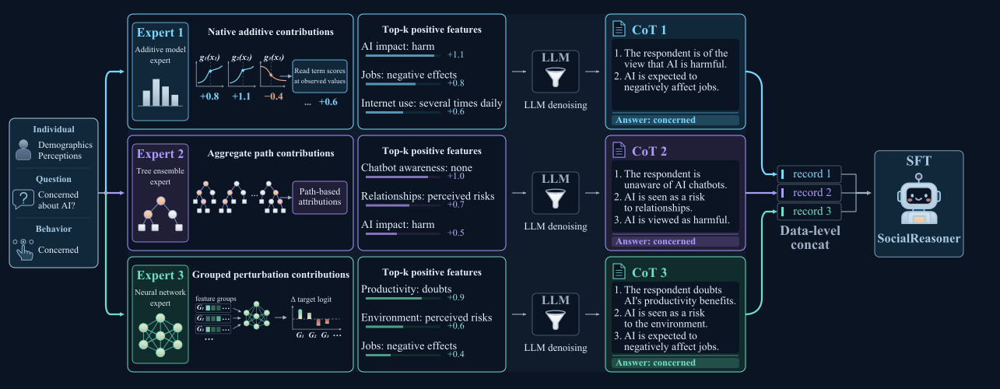

Population response distributions
Five harmonized answer categories
Figure 4(a)ISSP2021Qwen3-4B
Human responses
Base
SocialReasoner
Response share
SocialReasoner predicts survey responses from demographics and perceptions, with reasoning supervision built from expert evidence.
Learning a Foundation Model of Human Social Reasoning from Heterogeneous Experts
WHY WE NEED SOCIAL REASONING
Today’s LLMs achieve state-of-the-art performance in coding and math, yet lack the intermediate reasoning humans use to think through social issues.

METHOD
Choose a profile, question, and model to explore the training data.
Loading examples…
Profile
Target question
Perceptions
Choose a model to see an example.
Chain of thought
EBM, LightGBM, and MLP provide different predictive cues. Their records are combined to train SocialReasoner.

Figure 3
EXPERIMENTAL RESULTS
Choose a backbone to compare the base model with SocialReasoner
+34.37% relative gain in mean accuracy
Mean accuracy is the arithmetic average across the eight evaluation datasets. Relative gains are reported in Table 1.
RESPONSE DISTRIBUTIONS
Five harmonized answer categories
Response share
Thinking about the U.S. over the next 20 years, do you think artificial intelligence (AI) will lead to more or fewer jobs for truck drivers?
Response share
Thinking about the U.S. over the next 20 years, what impact do you think artificial intelligence (AI) will have on the environment?
Response share
Thinking about the next 20 years, how likely do you think it is that artificial intelligence (AI) will make humans more productive?
Response share
Figure 4(b) · Table 7 ISSP2021 Qwen3-4B
Mean across questions · original answer options · lower is better
DATA COVERAGE
RESOURCES